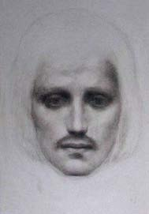

Doğum ve Çocukluk (1883-1895)
Halil Cibran 6 Ocak 1883’te Kuzey Lübnan’ın dağlık bir bölgesi olan Bişerri semtinde Hıristiyan Maruni mezhebine bağlı bir ailede doğdu.
Lübnan, Büyük Suriye’nin (Suriye, Lübnan ve Filistin’i içeren) bir Türk eyaletiydi ve Lübnan Dağı bölgesine özerk idare statüsü tanımış Osmanlı hâkimiyeti altındaydı. Lübnan Dağı’nın halkı Osmanlı idaresinden bağımsızlığını kazanmak için yıllarca mücadele etmişti. Daha sonra Cibran da bu davayı benimseyip aktif bir üyesi olacaktır. Lübnan Dağı Hıristiyanlar, özellikle de Maruniler ile Müslümanlar arasında nefreti körükleyen çeşitli dış müdahelelerden dolayı sıkıntı yaşayan bir bölgeydi. Yaşamının sonraki dönemlerinde Cibran şahit olduğu dinsel bağnazlığı, zulmü ve gaddarlıkları ortadan kaldırmak için değişik mezhepleri birleştirme amacı güdecektir. Milattan sonra beşinci yüzyılda Bizans kilisesindeki bölünme sırasında oluşan Maruni mezhebi, kendi mezhepsel düşüncelerine önderlik etmesi için keşiş St.Marun’a katılmış bir grup Suriyeli Hıristiyandan oluşuyordu ve Cibran ailesi de bu mezhebe bağlıydı.
Bir aile hatırası
Annesi Kamile Rahme üçüncü kocası Halil Cibran’dan Cibran’ı dünyaya getirdiğinde otuz yaşındaydı. Kocası ileride aileyi yoksulluğa terk edecek sorumsuz bir kocaydı. Cibran kendisinden altı yaş büyük Peter adında bir üvey ağabeye ve Mariana ve Sultana adlarında iki de kızkardeşe sahipti. Cibran, annesiyle birlikte kardeşlerine her zaman derinden bağlı biri olmuştur. Kamile’nin ailesi itibarlı bir dini geçmişe sahipti ve eğitim almamış anneye güçlü bir irade aşılamıştı. Nitekim ailesinin yardımıyla Kamile ileride kendi ailesine ABD’de tek başına bakacaktır.
Annesi Kamile, Cibran’ın resmi
Yemyeşil otlarla kaplı Bişerri bölgesinde büyüyen Cibran yalnız, dalgın ve düşünceli bir çocuktu. Çağla-yanlar, sarp kayalar ve yeşil çayırların süslediği doğal bir çevre onun yazılarında ve çizimlerinde dramatik ve sembolik etkiler bıraktı. Ailesinin yoksulluğu nedeniyle resmi bir eğitim alamayan Cibran bir köy papazına düzenli ziyaretlerle eğitim hayatına adım attı. Papaz, öğrencisine Süryanice ve Arapça dillerinin yanı sıra dinin temel esaslarını ve İncil’i öğretiyordu. Cibran’ın meraklı ve uyanık mizacının farkına varan Papaz, ona alfabenin ve dilin esaslarını öğretmeye başladı ve tarih, bilim ve dilin kapılarını açtı. Cibran on yaşındayken bir kayalıktan düşüp sol omuzunu yaraladı. Bu kazadan sonra hayatı boyunca bu omzu hep zayıf kalacaktır. Ailesi çıkığı düzeltmek için omzunu bir haça sardı ve kırk gün sargılı bekletti. Hz. İsa’nın doğadaki gezintilerini andıran bu sembolik hadise hayatı boyunca Cibran’ın hafızasından hiç silinmeyecektir.
ABD’ye Göç (1895-1898)
Cibran sekiz yaşına geldiğinde, babası vergi kaçırmakla suçlanıp hapse atılırken, Osmanlı yetkililer Cibranlar’ın mülkiyetine el koyup onları evsiz bıraktılar. Aile bir süre akrabalarla birlikte yaşamak zorunda kaldı. Derken güçlü bir iradeye sahip olan anne, daha önce ABD’ye göç etmiş Cibran’ın amcasının izinden giderek, daha iyi bir yaşam sürme gayesiyle ailenin oraya göç etmesi gerektiğine karar verdi. Baba 1894’de serbest bırakılmasına rağmen ailenin sorumsuz reisi olduğu için göç konusunda tereddüte düşüp Lübnan’da kaldı.
25 Haziran 1895’te Cibranlar New York’un Amerikan kıyılarına doğru yola çıktılar.
Cibran ailesi Boston’a yerleşti. O zaman Boston ABD’de New York’tan sonra ikinci büyük Suriyeli nüfusa sahipti. Kültürel açıdan çeşitlilik arz eden bölge, daha önceden Arapçanın konuşma diline ve yaygın Arap adetlerine aşina olan Kamile’ye yabancı gelmedi. Artık aileye bakan kişi olan Kamile, Boston’un yoksullaşmış caddelerinde seyyar satıcı olarak çalışmaya başladı. O zaman seyyar satıcılık, garip Arap adetleri ve güya aylaklıklarıyla olumsuz bir izlenim bırakmış çoğu Suriyeli göçmenin başlıca geçim kaynağıydı.
Yeni bir yoksulluk döneminde büyüyen Cibran’ın burada geçirdiği ilk yılların acısı hayatında silinmez bir iz bırakacaktır. Ne var ki o, çocukluk anılarını zihninde yeniden canlandırarak, sefalet ve hakaretlerle dolu olumsuz yaşam koşullarından ruhen de olsa bir nebze uzaklaşacaktır. Bununla birlikte yoksul göçmen bölgelerindeki hayır kurumları göçmen çocuklarının sokaklardan kurtulup yerel bir okula devam etmelerine imkân sağlıyordu. Ailenin skolastik eğitim alan tek üyesi Cibran olacaktır. Zira mali sıkıntılar ve Ortadoğu gelenekleri nedeniyle kızkardeşlerinin okula gitmelerine izin verilmedi. Yaşamının sonraki evrelerinde Cibran kadınların özgürlüğü ve eğitimi davasının öncülerinden biri olacak ve güçlü iradeli, entelektüel ve bağımsız kadınları çevresinde toplayacaktır.
Okuldaki bir kayıt hatası nedeniyle ismi Halil Cibran şeklinde eksik kaydedildi ve sonraları tam isminin yazılmasına yönelik çabalarına rağmen yaşamının sonuna kadar ismi böyle kaldı. Cibran ABD’ye varmasından sadece iki ay sonra 30 Eylül 1895’te okula başladı. Resmi bir eğitim almadığı için İngilizce öğrenmek zorunda olan göçmen çocuklarına ayrılmış sınıfa yerleştirildi. Cibran Lübnan’daki çocukluk yıllarında başladığı bir hobi olan eskiz ve çizim yeteneğiyle öğretmenlerinin dikkatini çekti.
Kamile’nin sıkı çalışması sayesinde ailenin mali durumu iyileşirken biriken tasarruflar, Peter’in küçük bir dükkân açmasına olanak tanıdı. Cibran’ın iki kızkardeşi de bu dükkânda çalışmaya başladı. Mali gerilimler ve vatandan uzaklık aile fertlerini birbirlerine sıkıca kenetlenmeye itti. Kamile çocuklarına, özellikle de içe kapanık oğlu Cibran’a hem duygusal hem de mali destek sağladı. Bu zor dönemde Cibran’ın toplumsal yaşamdan uzaklığı ve meraklı mizacı derinleşti. Onun bu ayrıklığını aşmasına yine annesi yardım etti. Annenin serbestliği oğlunun sosyal yaşama katılmasına ve sanat ve edebiyatın o güzelim dünyasını keşfetmesine olanak tanıdı.
Halil, 13 yaşında
Cibran’ın merakı, tiyatro, opera ve sanat galerilerinin zengin dünyasının kapılarını ona açacak Boston’ın kültürel ortamıyla tanışmasını sağladı. Çevresindeki kültürel manzaraların yarattığı heyecanla dolan bu Suriyeli delikanlı sanatsal çizimleriyle yerel okuldaki öğretmenlerin ilgisini çekti. Öğretmenleri onda sanata adanmış bir gelecek görüyorlardı. Bu nedenle Bostonlu fotoğraf sanatçısı ve sanat hamisi Fred Holland Day ile temasa geçtiler. Bu adam Cibran’ın ileride ünlü bir sanatçı olmaya varacak yola girmesine önayak oldu.
Cibran 1896’da Fred Holland Day ile tanıştı ve ondan sonra Day’in sıradışı sanatı ve Boston sanat çevresiyle temasları sayesinde Cibran da çevresinde tanınmaya başlandı. Day, merakllı Suriyeliyi Yunan mitolojisi, dünya edebiyatı, çağdaş yazın ve fotoğrafla tanıştırıp, kendi ifadesini bulmaya teşvik etti. Day’in özgür eğitimi ve kalıpların dışındaki sanatsal keşiflerinden etkilenen Cibran, kendini gerçekleştirmek ve özgünlük adına sıradışı olanı özgürce savunmayı benimseyecekti. Day, Cibran’ın eğitimiyle ilgilenmenin dışında, o zamanlarda göçmenlere yapılan muameleyı ve yoksulluğu yaşamış olan Cibran’ın özgüveninin yükselmesinde de rol oynadı. Tahmin edileceği gibi, Cibran çabuk öğrenen bir öğrenci olarak, zayıf Arapçasına ve İngilizcesine rağmen Day’in kendine sunduğu herşeyi hemen öğreniyordu.
Fred Holland Day
Fred Holland Day’in bir sanat sergisi sırasında Cibran, Josephine Peabody adındaki bir kadının resmini çizdi. Tanınmamış bir şair ve yazar olan bu kadına sonraları aşık olup evlilik teklifinde bulunacak ama ne yazık ki reddedilecekti. Aşk konusunda yaşayacağı hayal kırıklıklarının ilki olacaktı bu.
Cibran’ı eskiz ve çizimlerini geliştirmeye sürekli teşvik eden Day, onun, resimlerini 1898’de kitap kapakları olarak yayımlamasına da aracılık etti. O zamanlar Cibran, Day’in desteği ve teşvikiyle kendi tekniğini ve üslubunu geliştirmeye başlamıştı. Yavaş yavaş Boston çevrelerine girdi ve sanatsal yetenekleri sayesinde erken yaşta tanındı. Ne var ki ailesi, erken yaşta gelen bu başarının gelecekte başına sorunlar açabileceğine karar verdi. Ailesinin bu kararını onaylayan genç sanatçı eğitimini tamamlamak ve Arapça öğrenmek üzere Lübnan’a döndü.
Lübnan’da Eğitim (1898-1902)
Cibran 1898’de Beyrut’a vardı. İngilizcesi zayıftı, Arapçayı ise ne okuyabiliyor ne de yazabiliyor ama akıcı bir şekilde konuşabiliyordu. Arapçasını geliştirmek için el-Hikme okuluna kaydoldu. Marunilerin kurduğu bu okulun milliyetçi müfredatı kilise yazılarına, teolojiye ve tarihe yer veriyordu. Asi ve bireyci bir doğaya sahip olan Cibran dar kapsamlı müfredata karşı çıktı ve kolej düzeyinde kendi eğitim ihtiyaçlarına cevap verecek münferit bir müfredat talep etti. Okul bu talebi kabul etti ve müfredata Cibran’ın isteğine uygun dersler ekledi. Arap edebiyatı üzerinde çalıştı. Bu çalışmaları esnasında klasik ve modern Arapça üzerine yoğunlaştı. Cibran üslubundan ve yazımından çok etkilendiği Arapça İncil’e daldı. Bu etkilenimin yansımaları ileride eserlerinde görülecektir.
Cibran, Beyrut, 1898
Bir öğrenci olarak Cibran öğretmenlerin ve öğrencilerin üzerinde büyük bir etki bıraktı. Bireyci davranışları, kendine güveni, garip havası ve sıradışı uzun saçları herkesi etkilemişti. Arapça öğretmeni onda “sevgi dolu ama kontrollü bir kalp, kabına sığmayan bir ruh, asi bir zihin ve gördüğü herşeyle dalga geçebilen bir göz” olduğunu söylüyordu. Ne var ki okulun katı disiplinli havası, göze batacak şekilde dini vecibelerini aksatan, dersleri asan ve kitaplara eskizler çizen Cibran’ın hoşuna gitmedi. Arap dünyasındaki edebi hareketlerle de yoğun bir şekilde ilgilendi. Okulda Yusuf el-Huvayik ile tanıştı ve onunla el-Manara (Fener) adında bir dergi çıkardı. İkili derginin editörlüğünü yaparken, Cibran aynı zamanda illüstrasyonlar da yapıyordu.
Bu arada yirmi dört yaşındaki Bostonlu güzel kadın Josephine Peabody, genç Suriyeli sanatçıdan etkilenmişti. Day’in bir sergisi sırasında dikkatini çeken bu kadına Cibran bir eskizini adamıştı. Lübnan’da kaldığı sırada bu kadınla mektuplaşmaya başladı. Çok geçmeden aralarında duygusal bir ilişki gelişti ve mektuplaşmayı sürdürdüler, ta ki Josephine Cibran’ın evlilik teklifini reddedip 1906’da bir başkasıyla evlenene değin.
Josephine Peabody
Cibran Arapça ve Fransızca öğrenip çalışmalarında, özellikle şiirde ustalaşarak 1902’de kolejini bitirdi. Bu arada babasıyla olan ilişkisi, zenginleşen bilgi dağarcığı nedeniyle gerilince kuzeninin yanına taşınmak zorunda kaldı. Böylece nefret ettiği ve yaşamı boyunca utandığı yoksulluk günleri başladı. Lübnan’daki yoksulluğa, ailesini sarsan hastalık haberleri eşlik etti. Kızkardeşi Sultana bağırsaklarından hastalanmış, annesinin kanseri azmaya başlamış, üvey ağebeyi ise ölmüştü. Sultana’nın ağır hastalığının haberini alması üzerine Mart 1902’de Lübnan’dan ayrıldı.
Ailede Ölümler ve ABD’ye Dönüş (1902-1908)
Ne yazık ki Boston’a geç vardı; Sultana 4 Nisan 1902’de on dört yaşında ölmüştü. Gelecek aylarda aile içinde vuku bulacak bir dizi ölümün ilkiydi bu. Cibran ailesini çok severdi. Yas döneminde Day ve Josephine sanat gösterileri ve Boston sanat çevresiyle buluşmalarla onu teselli ettiler. Cibran’ın sanatsal becerleri ve eşsiz davranışları, bu yabancı yeteneği sanat çevrelerine memnuniyetle dâhil eden Boston cemiyetinin dikkatini çok önceden çekmişti.
Yavaş yavaş Cibran’ın kalbini fetheden Josephine, onun hayatında etkili biri oldu. Bostonlu bu şair, Cibran’dan hep “genç ermişi” diye söz ediyordu. Cibran’ın doğulu geçmişinden çok etkilenen Josephine, onun canlı çizimlerle süslediği mektuplarının ve konuşmalarının büyüsüne kapılmıştı. Josephine’in ilgisi ve sevgisi Cibran’ın Ermiş (The Prophet) adlı kitabına esin kaynağı oldu. Kitabın adı Josephine’in Aralık 1902’de yazdığı ve kendi hayal gücüne göre Cib-ran’ın Bişerri’deki yaşamını betimlediği onbir dizelik şiire dayanıyordu. Daha sonra Cibran bu kitabı yayımladığında edebiyatta ustalaşmasına yardım eden Josephine’e adayacaktı.
Annesi Şubat ayında kanser tümöründen kurtulmak için ameliyat geçirdi. Cibran kederini hafifletmek için aile işini eline aldı ve şansını Küba’da denemeye giden üvey ağabeyi Peter’in bıraktığı dükkânı işletmeye başladı. Bu yeni yük Cibran’ın ruhuna ağır geldi ve sanatsal çabalara zaman ayırmasını engelledi. Bu zaman diliminde Cibran yoksulluk, hastalık ve ölüm atmosferinden kaçmak için eve pek uğramaz oldu. Ertesi ay Peter, Küba’dan ağır bir hastalığa yakalanmış halde döndü ve çok geçmeden 12 Mart’ta öldü. Daha kötüsü, annesinin kanseri ilerlemişti ve kadıncağız aynı yılın 28 Haziran’ında vefat etti. Bu olay üzerine Cibran bayıldı ve ağzından kan geldi.
Ailedeki bu üç ölümden sonra Cibran dükkânı sattı ve kendini Arapça ve İngilizce yazımda geliştirmeye adadı. Yaşamı boyunca da bu ikili çabasını sürdürecekti. Bu arada Day ve Josephine onun ilk sanat sergisini açmasına yardım ediyordu. Sergi 3 Mayıs 1904’te açıldı ve eleştirmenlerden övgüler aldı. Sergilediği alegorik ve sembolik karakalem çizimler Boston cemiyetini büyüledi. Bununla beraber, serginin önemi başka bir hususa dayanıyordu; Josephine kocası aracılığıyla, sahip olduğu okulu yöneten Mary Haskell’i Cibran’ın çizimlerini görmeye davet etmişti. Tanışmaları Cibran’ın yazarlık kariyerini çok etkileyecek bir ömürlük ilişkinin başlangıcı oldu. Cibran Arapça yazıları konusunda Josephine’in görüşünü almak için o yazıları İngilizceye çevirmişti. Dil engeli yüzünden Josephine, Cibran’ın sadece fikirleri üzerinde görüş beyan edebiliyor ve onu dilsel sorunlarla başbaşa bırakmaya mecbur kalıyordu. Daha sonra Josephine’in rolünü Mary Haskell üstlenecekti.
Mary Haskell otuz yaşındaydı ve Cibran’dan on yaş büyüktü. Cibran’ın sanatsal gelişimini finanse edecek ve onu, idealindeki sanatçı olmaya teşvik edecekti. Okul yöneticisi Haskell eğitimli, güçlü iradeli ve özgür bir kadındı ve romantik yapıdaki Josephine’inden farklı olarak kadınların özgürlüğünün faal bir savunucusuydu. Mary, Cibran’ın İngilizce yazmaya eğilmesinin ardındaki etkendi. Nitekim onu Arapça eserlerini İngilizceye çevirmeyi bırakıp doğrudan İngilizce yazmaya ikna etmişti. İngilizce eserlerini Mary’nin edite etmesi ve aralarındaki işbirliği Cibran’ın çalışmalarını parlattı. Mary, Cibran’la saatlerce vakit geçiriyor, yazılarının üzerinden geçiyor, hataları düzeltiyor ve yazması için yeni fikirler öneriyordu. Hatta Cibran’ın dilini ve düşüncelerini daha iyi kavramak için Arapça öğrenmeye bile kalkıştı.
Mary’nin günlüklerinde Cibran ile ilişkisinin önemi ve anlamı ortaya çıkmaktadır. Cibran’ın sanatsal gelişimi, içten düşünceleri ve aralarındaki şahsi ve entelektüel sohbetler Mary’nin günlüklerine neredeyse onyedi buçuk yıl boyunca kaydedilecekti. Bu kayıtlar Cibran’ın halktan sakladığı kişisel düşüncelerini ve ideallerini öğrenmek açısından büyük önem taşımaktadır.
Mary ve Cibran
1904’te Cibran Arapça göçmen gazetesi el-Muhacir’e makaleler yazmaya başladı. Bu makaleler onun yayımlanmış ilk çalışmasıydı. İlk makalesi “Vizyon” bol sembolizm kullanarak kafesteki bir kuşu betimleyen romantik bir makaleydi. Lübnan’da dört yıl Arapça öğrenmesine rağmen Cibran’ın yazılı Arapçası konuşma dilinin havasını taşıyordu. Arapçasını ilerletmek için kulağına güvenmiş, geleneksel sözcükleri öğrenmiş, memleketi Bişerri’de anlatılan Arapça hikâyeleri dinlemişti. Arapçası, konuşma dili havasında olduğundan dinleyicilerinin de hoşuna gidiyordu. Cibran’a göre dilin kurallarının dışına çıkılması gerekiyordu. Arap göçmen yazarlarına gelenekten kopup kendi üsluplarını bulmalarını öneriyordu. Yaşamı boyunca Cibran’ın Arapça yazıları, İngilizce kitaplarının aldığı övgüyü almadı. Bu da sonradan onu İngilizce yazılara yoğunlaşmaya ve Arapça üslubunu geliştirme çabasını bir kenara koymaya itti.
Cibran’ın ilk Arapça yapıtı el-Mûsikî 1905’te yayımlandı. Bu kitabın esin kaynağı üvey ağabeyinin ud çalması ve Day’in opera davetleriydi. Aynı yıl el-Muhacir adlı gazetenin “Gözyaşları ve Kahkaha” adlı köşesinde yazılar yazmaya başladı. Bu köşenin adı daha sonra “Bir Gözyaşı Bir Tebessüm” adlı kitabına esin kaynağı olacaktı. Cibran el-Muhacir’de yazarken, Emin Rihâni adındaki bir Arap göçmen yazarın dergiye gönderdiği yazı, geleneksel yazarları taklit eden ve para için şiiri kullanan çağdaş Arap yazarlarını eleştiren Cibran’ın makalesini övüyordu. Rihâni ileride önemli bir yazar ve Cibran’ın dostu olacaktı. Aynı dönemde Cibran birkaç Arapça şiir yayımladı ve sevgi, hakikat, güzellik, ölüm, iyilik ve kötülük hakkında gazetelere yazılar yazdı. Yazılarının çoğu keskin ve ironik tonlar taşıyan romantik bir havaya sahipti.
1906’da Cibran ikinci Arapça kitabını yayımladı: Arâisu’l-Murûc (Vadinin Perileri). Kitap Kuzey Lübnan’da geçen üç alegoriden oluşuyordu. “Marta”, “Deli Yuhanna” ve Çağların Külü ve Ebedi Ateş” adlı alegoriler fahişelik, dinsel zulüm, reenkarnasyon ve mukadder aşk gibi konuları işliyordu. Alegoriler Bişerri’de dinlediği hikâyelerin ve İncil’e, mistik şeylere ve sevginin doğasına duyduğu hayranlığın yoğun etkilerini yansıtmaktadır. Cibran ileride “Deli” adlı kitabında delilik konusuna geri dönecektir. Cibran’ın erken dönem Arapça yazılarının ayırt edici özellikleri, ironizm ve sembolizm kullanışı, ikinci sınıf vatandaşların betimlemesi ve ruhban sınıfına karşı söylemiydi.
Mart 1908’de Cibran’ın üçüncü Arapça kitabı el-Ervâhu’l Mütemerrida (Asi Ruhlar) yayımlandı. Bu kitap el-Muhacir gazetesindeki yazılarına dayanan dört anlatıdan oluşuyordu. Söz konusu kitap Lübnan’daki toplumsal meselelerden söz ediyor, evli bir kadının kocasından kurtuluşunu anlatıyor, özgürlüğe çağrıda bulunuyor, istemediği bir evlilikten ölümle kurtulan bir gelini betimliyor ve 19.yüzyılda Lübnan’daki feodal ağaların gaddarca haksızlıklarını ortaya döküyordu. Bu yazıları cesur fikirlerinden, din adamlarını olumsuz sunmasından ve kadınların özgürlüğünü teşvik etmesinden ötürü din adamları tarafından sert eleştirilerle karşılandı. Cibran daha sonraları Mary’e Asi Ruhlar’ı yazdığı dönemin karanlığını, hastalık, ölüm düşüncesi ve sevgiyi yitirme hissiyle nasıl boğuştuğunu anlatacaktır. Kitabın din adamlarına karşı olması nedeniyle Suriye hükümetinin sansürüne uğraması ve Cibran’ın aforoz edilmesi onu endişelendirmişti.
Paris Seyahati ve New York’a Yerleşme (1908-1914)
1 Temmuz 1908’de Cibran Boston’dan ayrılıp Paris’e Academie Julien ve Ecoles des Beaux Arts’da sanat okumaya gitti. Oraya varınca Fransız kültüründen çok etkilendi ve günlerini çeşitli sanat sergilerinde ve müzelerdeki resimleri inceleyerek geçirdi. Avrupa edebiyatıyla yoğun bir şekilde ilgilendi. Çağdaş İngiliz ve Fransız yazarlarının kitaplarını okudu. Sanatı ve düşüncesi üzerinde derin bir etki bırakan William Blake’in eserleri ile özel olarak meşgul oldu. Öte yandan 2 Ekim 1908’de Paris’ten yazdığı şu satırlar Mary’nin onun için ne ifade ettiğini anlatıyordu: “Umarım ki uzun yaşarım ve bana bunca şey vermiş olan hakkını kısmen de olsa sana ödeme şansım olur. Umarım ‘Mary Haskell sayesinde sanatçı oldum.’ diyebileceğim günler gelir.”
Öte yandan Cibran’ın Fransa seyahati sanatsal eğitimini eksikliğini açığa vurmuştu. Zaten eleştirmenler de onun resimlerini sırf bu açıdan eleştiriyorlardı. Daha önceden Cibran resmi eğitim almayı reddetmiş, yalnızca yeteneklerine ve duyuş kabiliyetine bel bağlamıştı. Çok geçmeden akademinin resmi eğitiminden soğuyan Cibran kendi sanatını özgürce keşfetmek için akademiden ayrıldı. Cibran’ın Paris’teki asıl hocası Maitre Lawrence idi. Fakat Lawrence’in sanatından nefret eden Cibran sonunda onun derslerini bıraktı ve yalnız çalışmaya devam etti.
Lübnan’daki eski sınıf arkadaşı Yusuf el-Huvayik ile karşılaştı. Bu iki insan çok yakın bir dostluk kurdular ve birlikte resimdeki modern eğilimleri tanımaya ve öğrenmeye yöneldiler. Modern sanattaki yeni eğilimleri incelerken, Kübizmi “çılgın bir devrim” olarak niteleyip antipatik buldular ve klasik geleneğe olan bağlılıklarını pekiştirdiler. Model kullanarak çizim yaptılar ve sanat sergilerini gezdiler. Bu dönemde Cibran ünlü heykeltıraş Auguste Rodin ile tanıştı ve bu kısa tanışıklık bile Cibran’ın sanatı üzerinde çok derin etkiler bıraktı. Bazı kaynaklarda Cibran’ın Rodin’den ders aldığından bahsedilmesine rağmen, Cibran’la anılarını kitaplaştıran Yusuf El-Huvayik’in ifadesiyle Cibran Rodin’den hiçbir zaman ders almamıştır. Öte yandan El-Huvayik, bahsi geçen anı kitabında, Cibran’ın da eserlerinin sergilendiği bir sergiyi ziyaret eden Rodin’i ve onun Cibran’la tokalaşma anını detaylarıyla anlatır. Muhtemelen Cibran-Rodin ilişkisi bundan çok da öteye gitmemiştir. Bununla birlikte Rodin, Cibran için şunu demektedir: “Resmin ve şiirin, onu yeni bir Blake yapacak kadar birbirine bağlantılı olduğu başka bir kimseyi tanımıyorum.”
Cibran 25 yaşında,
Yusuf el-Huvayik’in yağlı boya tablosu
Paris döneminde her hafta sonu Louvre Müzesi’ne gitmeyi ihmal etmeyen Cibran, İngiltere’de bir müzede saatlerce izlediği bir kadın heykelinden sonra müzeden çıkarken “o saatlerce izlediği kadın heykeline saygısızlık olmaması için kafasını yere eğerek ve gözlerini kısarak çıktığından” bahseder mektuplarının birinde.
Daha sonra Cibran alaycı mizacını ve yazım üslubunu beğendiği Arap yazar dostu Emin Rihâni ile birlikte Londra’ya gitti. İki yazar Lübnan anıları, Maruni geçmişi ve zamanın toplumsal sorunlarıyla ilgilenmek gibi ortak noktaları paylaşıyorlardı. Birlikte Arap Dünyası’nın kültürel rönesansı üzerine planlar yaptılar. Bu planlardan birisi, Hıristiyanlık ve İslam’ın uzlaşmasının bir sembolü olarak Beyrut’ta çift kubbeli bir opera binası kurmaktı. Haziran 1909’da Cibran babasının ölüm haberini aldı ve onun ölmeden önce oğlunu kutsadığı ve despotça tutumunu yumuşattığı düşüncesiyle kendini teselli etti.
31 Ekim 1910’da Cibran bütün yurtdışı yolculuklarına son verip ABD’ye yerleşti ve yazmaya ağırlık verdi. Boston’a gelişinin üzerine Lübnan mahallesinden kurtulmak ve New York’un kültürel atmosferinde daha büyük sanatsal bir mekân bulmak için Mary’e New York’a taşınmayı önerdi. Taşınmaları eğitimsiz ve bekar bir terzi olan kızkardeşi Marianna’yı Boston’da yalnız bırakacaktı.
Aralık 1910 Mary’nin günlüğünün başlangıç tarihiydi. Cibran’ın yaşamına dair kişisel anılara adanmış bu günlük yaklaşık onyedi yıl boyunca tutulacaktı. Aynı yılın 10 Aralığında Cibran Mary’e evlilik teklifinde bulundu ve yine reddedildi. Bu sefer ki sebep aradaki on yaş farkıydı. Yaş meselesi ikili arasında bir sevgi ilişkisinin gelişmesine engel teşkil etmişti. Zira Mary böyle genç biriyle birlikte olmasının yol açacağı toplumsal tepkiden endişeleniyordu. Yine de bu olay arkadaşlıkla başlayıp sevgi ilişkisine ve ardından sanatsal işbirliğine dönüşen ilişkilerini bitirmedi. İlişkilerinin gelişmemesindeki bir başka etken de paraydı. Ne de olsa Cibran bir finansör olarak Mary’nin rolünün aralarındaki manevi bağı gölgelemesinden endişeleniyordu. Bu yıpratıcı mesele yüzünden sürekli tartışıyorlardı. Nitekim Mary’e New York’tan yazdığı 1 Mayıs 1911 tarihli ilk mektubunda şunu söyler: “Mary neden bana bu kadar para yolladın? Bende yeterince var. Bana gelmeden önce ihtiyacımdan fazlasını verdin.” Öte yandan Mary’nin yardım eli diğer göçmenlere de uzanmış, gelecek vaat eden başka öğrencileri de para yardımında bulunmuştu ama onların hiçbiri Cibran’ın eline su dökemezdi.
Bu arada 1911’de Cibran el-Muhacir gazetesinden başka bir göçmen gazetesi olan Mir’aat el-Garb’e (Doğunun Aynası) geçti ve 1912 yılına kadar bu gazeteye makaleler yazdı. Mary’nin takdim mektuplarının desteğiyle yeni bir sanat yaşamı kurmak için aynı yılın 26 Nisan’ında New York’a taşındı.
New York’ta yeni kitabı üzerine çalışmaya başladı. El-Ecnihatü’l-Mütekassira (Kırık Kanatlar) 1906’da yazmaya başladığı ve Ocak 1912’de yayımladığı bir kitaptır. Cibran’a göre bu kitap ruhsal bir otobiyografiydi, her ne kadar Mary’e kitapta yaşananların kendi deneyimleri olmadığını söylemişse de. En uzun Arapça romanı olan bu kitap genç bir adamla talihsiz biten bir aşk ilişkisi yaşayan Selma Karami’nin öyküsünü anlatmaktadır.
Selma’nın öyküsü Cibran’ın Lübnan’da okurken âşık olduğu Lübnanlı bir dul alan Sultana Tabit’le ilintilidir. Cibran onunla aşkı, şiiri ve kitapları paylaştığı yirmi iki yaşındaki bu genç dulun öyküsünü Mary’e anlatmıştı. Bazı eleştirmenler de kitabın öyküsünü yazarın çocukluktaki hocası Selim Dahir aracılığıyla tanıştığı Lübnanlı bir genç kızla yaşadığı başka bir talihsiz aşkla ilişkilendirirler. Josephine’nin Cibran ile yakın ilişkide olduğu 1904’te yazdığı Wings (Kanatlar) adlı tek perdelik oyun başka bir etkiyi de açığa vurmaktadır.
1911’de Cibran İrlandalı şair W. B. Yeat’in portresini çizdi. Sanat Tapınağı diye adlandıracağı bir portre albümünün ilk portresiydi bu. Bu albüm Aguste Rodin, Sarah Bernhardt, Gustav Jung ve Charles Russell gibi ünlü simaların yüzyüze yapılmış portlerini içeriyordu. Arap topraklarının Osmanlı hâkimiyetinden çıkmasıyla sonuçlanan yoğun siyasi faaliyetlere sahne olan bu dönemde Cibran, Suriye, Lübnan, İstanbul, Paris ve New York gibi pek çok merkezde doğan yarı-siyasi Arap cemiyetlerinden birisi olan el-Halkatü’z-Zehebiyye’ye (Altın Halka) katıldı. Bir grup Suriyeli genç göçmenin kurduğu bu cemiyet nerede olurlarsa olsunlar Suriyeli vatandaşların yaşam tarzının iyileştirilmesi için çalışıyordu. Lakin bu cemiyetin faaliyetleri uzun soluklu olmayacaktı.
Aynı yılda İtalya, Türkiye’ye savaş açmış ve bu gelişme liberal Suriyelilerin Osmanlı hâkimiyetinden kurtulma umutlarını canlandırmıştı. Cibran’in bağımsız Suriye düşü İtalyan general Giuseppe Garibaldi ile tanışmasıyla iyice güçlendi. Onunla birlikte Osmanlı idaresini alaşağı etmek için göçmen Suriyelilerden oluşan bir lejyona önderlik yapma fikrini ele aldı. Daha sonraları 1. Dünya Savaşı sırasında Cibran, Osmanlı yönetimine karşı birleşik Arap askeri hareketlerinin büyük bir savunucusu ve kışkırtıcısı oldu.
Özellikle Mary’nin gizli bir gelir kaynağı sağlayan mali desteği ve eserlerinin tanıtılmasına yarayan sanatsal temasları sayesinde Cibran, New York’ta ilgi görmeye başladı. Ev sahiplerinin ilgisini hemen çeken heyecan verici bir kişiliğe sahip olan Cibran kolayca insanlarla haşır neşir olabiliyordu. 1913’te yeni kurulmuş bir Arap göçmen dergisi olan el-Funun’un yönetim kadrosuna katıldı. New York’taki Arapça konuşan cemiyetin yayınladığı bu dergi yazınsal ve sanatsal meseleleri işliyordu. Cibran üsluba ve beğeniye özgürlükçü yaklaşan bu dergiye, daha sonra yayımlanacak ilk İngilizce kitabı olan Deli’nin (The Madman) temelini oluşturan birkaç makale yazdı.
Bu arada Cibran ile Mary arasındaki aşk ilişkisi bozulurken aralarında geçen para, cinsellik ve evlilik konularındaki tartışmalar ilginç bir gelişmeye yol açtı. Çok geçmeden Mary, Cibran’ın akıl hocası ve editörü oldu, İngilizce yazım yeteneğini geliştirmesinde ve kültürel eğitiminde ona yardım etti. Cibran Deli kitabı üzerinde çalışmaya 1913’te başlamıştı. Lübnan’da delilere yapılan muamelenin tarihini öğrendikten sonra bu konu onu hep büyülemiştir. Nitekim memleketi Bişerri’de delilere cinlerin musallat olduğunu ve kilisenin cin çarpmış insanların içindeki şeytanı çıkardığını duymuştu.
Daha 1908’de Asi Ruhlar’ı yazarken Josephine’nin fikrini almak için Arapça eserlerini İngilizce’ye çevirmeyi denemişti. 1913’te bu sefer Mary’nin okuyup edite etmesi için eserlerini tercüme etmeye çalıştı. Cibran, yazım yeteneğini geliştirmeye Mary’nin yardım etmesini önleyen tercüme ve dil engelinin zorluklarından yılgınlığa kapıldı. Çaresiz bir şekilde Arapça öğrenmeye çalışan Mary de İngilizce yazım dilini ve kültürel eğitimini geliştirmesi için Cibran’a dersler vermeye başladı. Aynı zamanda Mary, Cibran’ı Arapça eserlerini çevirmeyi bırakıp doğrudan İngilizce yazmaya teşvik etti. Öte yandan Mary göçmenleri yabancı dil öğrenirken anadillerini unutmamaları konusunda uyarıyordu. Mary’nin eğitim programı işe yaradı. Cibran bir yandan gramer ve yazım hatalarını düzeltirken diğer yandan okuma hevesini artırdı. Bu dönemde Nietzsche’nin üslubundan ve kendi İsa yorumuna ters düşen güç istenci kavramından etkilendi. Cibran’a göre İsa, Nietzsche’nin betimlediği gibi zayıf bir kişi değil, İnsanoğlu İsa’yı yazarak en uzun İngilizce eserini ona adadığı hayranlık uyandıran bir insandı. Bu kitabında İsa’yı, insan olarak farklı bir açıdan ele almış ve kitabın her pasajında farklı bir insanın ağzından anlatmıştır.
Mary ve Cibran Deli kitabını birlikte gözden geçirip hazırladılar. 1914’te Cibran beşinci Arapça kitabı olan Dem’a ve İbtisâme’yi (Bir Gözyaşı BirTebessüm) yayımladı. 1904’ten bu yana değişik dergilerde yayımlanmış mensur şiirlerinin bir derlemesiydi bu kitap.
İlahi âlem, Cibran’ın resmi.
Savaş Yılları ve Ermiş’in Yayımlanması (1914-1923)
Cibran’ın 1914’teki bir sanat sergisinde Amerikan mimar Albert Pinkam Ryder beklenmedik şekilde sergiyi ziyaret edip Cibrab’ı etkiledi. Cibran da ona bir şiirini adamaya karar verdi ve yayımladığı ilk İngilizce eseri olan ve ilkin Mary’nin edite ettiği bu şiir Ocak 1915’de piyasaya çıktı.
Bu arada Cibran zamanın siyasi gelişmeleriyle, özellikle 1. Dünya Savaşı’nın başlamasından itibaren daha faal şekilde ilgileniyordu. Cibran’a göre bu savaş, genel bir İtilaf saldırısıyla desteklenecek birleşik bir Arap askeri cephesi açarak Osmanlı idaresindeki Suriye’yi bağımsızlığa kavuşturmak ümidini yeşertmişti. Cibran, Osmanlı idaresine karşı kuvvetlerini bir araya getirmesi için hem Müslümanlara hem de Hıristiyanlara çağrıda bulunuyordu. Aslında Cibran ülkesini kurtuluşa götürecek romantik bir siyasi kahraman ve savaşçı olma hayali içindeydi. Savaşçı olma gayesiyle Lübnan’a dönme fikrini Mary’e açınca büyük bir tepki aldı.
Çocuklukta geçirdiği kazadan dolayı omzu yarı felç halinde zayıf kalmıştı. 1915’te omuz ağrısı tekrar nüksedince sol omzundan elektrik tedavisi gördü. Savaş yılları sırasında Cibran düşüncelerini dağıtan ve sağlığını bozan bir depresyona girdi. Osmanlılara karşı başkaldıran Araplara dair etkin ve yaygın yazılarına rağmen durumu umutsuz görüyor ve açlık çeken Suriye’ye para yardımında bulunuyordu. Savaşın uyandırdığı düşüncelerden uzaklaşmak için New York’un sosyal yaşamına daldı ve 1916’da The Seven Arts adlı edebiyat dergisine katıldı. Cibran’ın edebi üslubunu yansıtan bu derginin yönetim kuruluna giren ilk göçmen olmaktan gurur duyuyordu. O zamanlar Cibran’ın eserlerinden ezbere parçalar okumasından keyif alan edebiyat çevrelerinde aranan bir kişi olmuştu. New York sosyetesi “Halil Cibran Şiir Geceleri” düzenleyip şampanyalar patlatıyordu.
1917’de Cibran’ın eserlerinin sunulduğu iki ayrı sergi düzenlendi. Bunlardan biri New York’ta Knoedler Galerisi’nde, diğeri de Boston’da Doll and Richards Galerisi’nde gerçekleştirildi.
Cibran, 12 Ocak 1917 tarihli mektubunda Mary’e şöyle seslenir;
“Sevgili Mary, Sana başka bir minik mesel yolluyorum; vaktin olduğunda Okuman ve İngilizcesini düzeltmen için. Görüyorsun Mary, ben de senin okuluna gidiyorum ve sen olmasaydın tek kelime İngilizce yazamazdım. İngilizcem hala çok kısıtlı. Ama öğrenebilirim.”
1918’de Cibran en ünlü kitabı olan Ermiş’in tohumlarını oluşturan, “benim ada insanım” dediği nicedir üzerinde çalışmakta olduğu Arapça bir eserden söz eder Mary’e. Promethevâri bir adam olan El Mustafa adındaki bir kahinin 12 sene kaldığı Orphalese şehrinden ayrılıp, evine gitmek üzereyken bir grup halk tarafından durdurulması ve ana kahraman ile halk arasında insanlık ve hayatın genel durumu hakkında geçen konuşmalar kitabın içeriğini oluşturur. Günlüğünde Mary, Cibran’ın Ermiş’le ilgili sözlerini aktarır. Sonraları Cibran bu kitap için “kariyerimin ilk kitabı, benim asıl kitabım, olgun meyvem” diyecektir. Bir başka yerde de “Ermiş, benim İsa’nın yüzünü yeniden yaratma çabamdır” diyecektir. Öte yandan Cibran İngilizce yazım konusunda hâlâ endişeliydi ve sürekli Mary’den öneri bekliyordu. Cibran “evrensel bir dil” yaratma konusundaki düşüncelerini yansıtan Süryanıce İncil’in diline her zaman hayranlık duymuş ve çeşitli İngilizce yazılarında birleşik evrensel bir üslup oluşturmaya çalışmıştır.

El Mustafa’nın yüzü
Mary, Cibran’a Ermiş’i İngilizce yazmasını önererek bu kitabın tamamlanmasında önemli bir rol oynadı. Yakında yayımlanacak kitabı Deli’yi de aynı dille yazmasını salık verdi. Cibran ile Mary arasında geçen evlilik, ölüm, yaşam, sevgi ve benzeri konular üzerine konuşmalar Ermiş’e ve diğer eserlerine sirayet etmiştir. Ne var ki Mary, Cibran’ın 1919’da karar verdiği Ermiş adına karşı çıkmış ve onun yerine Counsels (Tavsiyeler) adını kullanmasını istemişti. Bu sırada Cibran, Mary’e gönderdiği bir mektupta ona şunları söyler: “Geçen iki hafta boyunca o kadar çok şey yaptım ki kendimi çok bitkin hissediyorum. Suriye’nin çabalarıyla benim kendi çabalarım arasında o kadar büyük bir girdap var ki. Her gün bu girdabı aşmak zorundayım ve bu beni çok yoruyor. Dinlenirken, ‘Tavsiyeler’ üzerinde çalışabileceğimi umuyorum. Onları sana en kısa zamanda göndereceğim.”
1918 sonbaharında Cibran ilk İngilizce kitabını ve geleneksel Arapça kafiyesi ve ölçüsüyle yazdığı bir şiirini, el-Mevâkib’i (Oluşumlar) yayımlamaya hazırlanıyordu.
Cibran’ın ilk İngilizce kitabı Deli (The Madman) 1918’de yayımlandı ve yerel basından olumlu eleştiriler aldı. Eleştirmenler onu Doğu ile Batı arasında köprü atması bakımından ünlü Hint yazar Tagore ve İngiliz şair William Blake ile kıyaslıyorlardı. Bizzat kendisinin illüstrasyonlarını yaptığı mesellerden oluşan bu kitapta Nietzsche, Jung ve Tagore’un etkileri apaçık görülmektedir. Deli kitabının başarısının ardından Cibran’ın popüleritesi artmaya başladı. Ne var ki Cibran yavaş yavaş eski tanıdıklarıyla, Day ve Josephine ile temasını koparmaya başlamıştı. Şimdi de Rihâni ile ilişkisi çözülüyordu. Öte yandan Doğulu geçmişine dair ifşa etmediği hususlar ve kişisel ihtiyatı göz önüne alındığında insanlar üzerinde uyandırdığı gizem havası hoşuna gidiyordu.
1919’da Cibran kendisinin illüstre ettiği ve en güzel resimlerinin de yer aldığı, Arapça şiiri el-Mevâkib’i (Oluşumlar) yayımladı ama Arap basınında fazla ilgi görmedi. Aynı yıl Fatat-Boston adlı başka bir yerel derginin yönetim kuruluna girdi ve çeşitli Arapça makaleler yazdı. Cibran’ın hayatı boyunca çeşitli cemiyetlere ve dergilere katılmasının nedeni avangard bir Arapça yazımın sözcülüğünü yapmak ve yabancı diyarlardaki Arap edebiyatını birleştirmekti. Ne var ki Cibran’ın Arapça yazarı olarak başarısı sınırlı kaldı. İronik bir şekilde, Arapça dil yeteneği hâlâ standartlara ulaşamıyor ve Arap basınında pek ilgi görmüyordu. Resimlerinin yer aldığı bir koleksiyonu Alice Raphael’in önsözüyle Twenty Drawings (Yirmi Çizim) adıyla yayımladı.
Fatat-Boston dergisinde Cibran 1914’te tanıştığı Mihail Nuayme adındaki göçmen Arap yazarla yakın bir ilişki kurdu. Nuayme zamanın önemli düşünürlerindendi ve Cibran’ın Arap dilini geliştirme ve Arap adetlerini ve geçmişini yerli yerince kullanma çabalarını takdir eden ilk Arap yazarlar arasındaydı. Nuayme, Cibran’ın Kırık Kanatlar adlı kitabını evrensel edebiyat dilinin bir örneği olarak görmüş ve Selma Karami’nin pekâlâ Ruh, İngiliz veya İtalyan kökenli de olabileceğini belirtmiştir.
1912 ile 1918 yılları arasında çeşitli dergilerde boy göstermiş kısa öykü ve mensur şiirlerini bir araya getirdiği el-Avasif’ı (Fırtına) ve ikinci İngilizce kitabı olan Haberci’yi (The Forerunner) yayımlayan Cibran, 1920’de er-Râbitatü’l-Kalemiyye isimli edebiyat cemiyetinin kurucu başkanı oldu On üyeden oluşan bu Arap göçmen cemiyetinin üyeleri arasında Andülmesih Haddâd, Nesîb ‘Arıda, Mihail Nuayme, Reşîd Eyyûb, Nedre Haddâd, William Catzflis, İliya Ebu Madi ve Vâdi’ Bahut gibi mümtaz Arap edebiyatçıları bulunuyordu. Cemiyetin amacı Arapça yazıların yayımlanmasına ve dünya edebiyatının çevrilmesine katkı sunmaktı. Söz konusu cemiyet Arap şairleri ve başarılı Arap yazar nesilleri üzerinde derin bir etki bırakmıştır. Cemiyetin ömrü boyunca Cibran sanatsal özgürlük çağrısında bulunmuş, yazarları kuralların dışına çıkıp kendi üsluplarını bulmaya yüreklendirmiştir.
Pen Yazarlar Birliği’nin bazı üyeleri, soldan sağa:
Nesib ‘Arıda, Halil Cibran, Abdülmesih Haddâd
ve Mihail Nuayme, 1920.
Bu dönemde Cibran’ın Arapça yazımla meşgul olması onu Ermiş kitabını tamamlamaktan bir süreliğine alıkoydu. Dahası, popüleritesinin yaygınlaşması daha fazla yerde sanatsal sunum yapmasını gerektirdiğinden Ermiş’i tamamlamak ile konuşma gezisi yapmak arasında bocaladı. Ne var ki kendini bütün zorluğuyla rağmen hem Arap dünyasının hem de İngiliz dünyasının sözcüsü olarak görmeyi sürdürüyordu.
Bu arada Cibran’ın siyasi fikirleri “Sizin kendi Lübnan’ınız var, benim de kendi Lübnan’ım” diyen makalesine tepki gösteren yerel siyasetçileri kızdırıyordu. Cibran Sureyi’nin bölgelerinin idare edilme tarzını onaylamıyordu ve Büyük Suriye bölgesi Lübnan, Filistin ve Suriye’ye ayrılırken yeni kurulan Arap ülkelerin kimliği üzerine yazılar yazıyordu. Bu ülkelerin nasıl bir yapıya börüneceği konusunda Cibran, siyasetçilere Batı kültürünün olumlu yanlarını benimseme ve silah ve kıyafet gibi yüzeysel şeyleri ithal etmekten sakınma çağrısında bulundu. Cibran’ın siyasi düşüncesi çok geçmeden ülkelerin kültürel yapısı ve vatandaşların sürmesi gereken yaşam tarzına dair genel bir fikir verdi.
1920’de Ermiş’in neredeyse dörtte üçü bitmişti ve Cibran Arapça yazmaya devam ediyordu. Mary’e yazdığı dokunaklı bir mektupta kimlik sorununu çözdüğünü ve Batı etkileri ile Doğu etkileri arasında bir denge kurduğunu söyledi: “Şimdi biliyorum artık, bütünün bir parçasıyım ben; kürenin bir parçası... Nereye uyduğumu artık keşfettim: ben bir bakıma küreyim ve küre de ben.”
1921’de mistisizm üzerine bir söylev niteliği taşıyan İrem Zâtü’l-İmâd (Yüsek Sütunlu İrem) isimli Arapça tematik oyununu yayımladı.
1922’de Cibran sonradan psikolojik durumuna bağlanacak bir kalp rahatsızlığına yakalanır ve şu itirafta bulunur: “Fakat benim en büyük acım bedensel değil. İçimde büyük bir şey var... Onu öteden beri biliyorum ama dışarı çıkaramıyorum: Bütün bu şeyleri yapan küçük birini oturup seyreden yüce sessiz bir benlik.” Aynı yılın Ocak ayında resimlerinin bir araya getirildiği sergi bu kez Boston Women City Club’ta düzenlendi.
Ermiş’in tamamlanmasına yakın Mary ile Cibran kitabın üzerinde Nietzsche’nin Böyle Buyurdu Zerdüşt’ünün etkisini fark ettiler. Mary üslup, büyük harf kullanma, noktalama işaretleri ve paragrafların biçimi konularında önerilerde bulundu. Cibran paragraflarının kısa kalmasında ısrar etti. Mary hep Cibran’ın özlü sözler adamı olduğunu ve söylemek istediğini olabildiğince kısa ifade ettiğini vurgulamıştır.
Ermiş’in yayımlanmasından birkaç ay önce Cibran kitabı Mary’e özetledi: “Ermiş tek bir şey söylüyor: Sen sandığından çok ama çok büyüksün ve her şey yerli yerince.”
1923’te Cibran çeşitli yerel ve göçmen Arap dergilerine yazdığı makaleler dolayısıyla Arap dünyasında sarsılmaz bir üne kavuşmuştu. Bu dönemde Mary’e olan mali ve editoryal bağlılığı yavaş yavaş azaldı. Para tartışmalarını çözüme bağlamak için yaptıkları anlaşma gereği borçlarının karşılığında resimlerinin bir kısmını Mary’e verdi. Cibran içinde, onyedi yaşındayken çizdiği İbn Sina, Gazzâli, el-Hansa, İbn Farıd, Ebu Nüvas, İbnü’l Mukaffa ve diğer büyük Arap filozoflarının hayali resimlerinin de bulunduğu el-Bedâyi’ ve’t-Tarâif’i (Güzellikler ve İlginçlikler) yayımladı. İngilizce yazım konusunda kendine güveni sağlamlaşınca Mary’nin fikirlerine müracat etme mecburiyetinden sıyrıldı. Bununla beraber Mary’nin yüzü illüstrasyonları için esin kaynağı olmaya devam etti. Çok geçmeden Cibran resimlerini kitap illüstrasyonlarıyla sınırlamaya karar verdi. Ermiş kitabı nihayet 1923 yılının Ekim ayında yayımlandı ve ABD’de mütevazı bir başarı elde etti.
Ermiş’i en büyük başarısı olarak gören Cibran şöyle demişti: “Lübnan’da bu kitabı yazmayı ilk kez tasarladığımdan beri, bir tek günüm bile Ermiş’siz geçmedi. Kitap benim bir parçam haline gelmiş gibiydi. Metni yayımcıma teslim etmeden önce tam dört yıl elimde tuttum. Çünkü emin olmak istedim, içindeki her sözcüğün kendimden verebileceğim en iyi sözcük olduğundan emin olmak istedim.”
Ölüm ve Yuvaya Dönüş (1923-1931)
1923’te Cibran Arap yazarı Mey Ziyade ile yakın bir ilişki kurdu. İkilinin mektuplaşmaları 1912’de başlamıştı. O yılda Mey yazdığı bir mektupta Kırık Kanatlar’daki Selma Karami’den nasıl etkilendiğini Cibran’a anlatmıştı.
Entelektüel bir yazar ve kadınların özgürlüğünün aktif bir savunucusu olan Mey, Filistin’de doğmuş ve oradaki bir manastır okulunda klasik eğitim almıştı. 1908’de Kahire’ye tanışınıp bir dergiye yazılar yazmaya başladı. Cibran gibi Mey de Arapça, İngilizce ve Fransızca’da akıcıydı ve 1911’de şiirlerini İsis Copia takma adıyla yayımladı. Mey, Kırık Kanatları çok liberal buluyordu ama kadın hakları meselesiyle yaşamı boyunca meşgul oldu. Cibran’ın yazılarını çok beğeniyordu ve ilerleyen yıllarda editör ve bilir kişi olarak Mary’nin rolünü üstlenecekti. 1921’de Cibran onun resmini almış ve ondan sonra yaşamının sonuna kadar onunla mektuplaşmayı sürdürmüştür.
Halil Cibran, Mey’e yazdığı bir mektupta şöyle diyordu: “Sevgili bayan Mey, ... Mektupların ne kadar güzel Mey, ne kadar hoş. Dağların tanesinden düşlerimin vadisine akan bir nektar nehri gibi. Gerçekten de bu mektuplar, uzaktakileri etkileyen, yakındakileri geliştiren ve büyülü yankılarıyla taşları parlayan meşalelere, dalları çırpınan kanatlara çeviren Orfeus’un Lutu gibi.”
İkilinin mektuplarından anladığımız kadarıyla birbirlerine karşı derin bir aşk beslemelerine ve bir araya gelme imkânına sahip olmalarına rağmen ne birbirlerinin sesini duymuşlar ve ne de bir kez olsun bir araya gelmişlerdir. Sadece mektuplarla iletişim kurmuşlardı. Cibran’ın vefatından sonra Mey Ziyade bir süre psikolojik tedavi görmüş ve sonrasında da ruhsal durumu bir türlü eskisi gibi olamamıştır.
Cibran öldüğünde Mey şöyle yazmıştır: “Hiçbir zaman bu kadar acı çekmemiştim, hiçbir kitapta bir varlığın bu çektiğim kadar büyük bir acıya katlanacak gücü bulacağını okumamıştım.”
Mey Ziyade
1920’lerde Cibran siyasi arenada aktif olmayı sürdürdü, kültür ve toplum üzerine yazılar yazdı. Yeni kurulan Arap ülkelerinin Batı kültürünün olumlu yanlarını alması gerektiğini savundu. Cibran’ın yazıları, özellikle kilise ve din adamlarıyla ilgili olanlar kendi ülkesinde tartışma yarattı. Yazar olarak Cibran tartışmayı severdi ve yazıları da bu yanını yansıtmaktadır. Arap dünyasında sınırlı ölçüde başarı elde etmesi, onu bir Arap yazar olarak kabul görme davasını bırakmaya ve bunun yerine çabalarını İngilizce yazımda yoğunlaştırmaya itti. Yavaş yavaş yazımda ustalaştı ve bir dil üslubu yarattı. Mary’e de söylediği gibi, bir oturuşta okunabilecek ve cepte taşınabilecek küçük kitapçıklar yazmak istiyordu.
Mary’nin Cibran’ın yazarlık kariyerindeki rolü giderek azalıyordu ama Cibran yanlış yatırımlarda bulunduğunda her zaman onun yardımına koşup sorunu hallediyordu. Bu yıllarda Mary, başarıyla yönettiği Haskell Kız Okulu’nun sorumluluğunu taşıyor, tüm zamanını ona veriyordu. Tam da o sırada, dul kalan kuzeni Savannah Georgia, Mary’i zengin ve başarılı bir işadamı olan Florance Minis ile evlenmeye ve sıkıntılı yaşamını değiştirip kendisine eşlik etmeye zorlamaya başlar. Mary’nin Boston’dan ayrılması da bu evlenme önerisine denk düşer. 1926’da evlilikle sonuçlanan bu ilişki 3-4 yıl sıkça seyahatle geçer. Mary, bu gezilerden birinde New York’ta Cibran’ı ziyaret ettiğinde artık özgürlüğünden vazgeçmiştir. Halil’le aralarındaki mektuplaşma sürer, satırlarda duygusallık ve saygı devam eder. Ancak eski mektuplardaki “Sevgili Yaşlı Fil”, “Sevgili Halil”in yerini “Halil” alır. Artık mektuplara ister istemez bir ‘resmiyet’ gelmiştir. Öyle de devam eder..
Aralarındaki duygusal ilişki bitse de Cibran ona güvenmeye ve danışmaya devam etti ve yazmaya niyetlendiği Ermiş’in ikinci ve üçüncü bölümlerinden ona söz etti. İkinci bölümün ismi Ermişin Bahçesi olacaktı ve adadaki bir bahçede ermişin, takipçileriyle yaptığı konuşmaları işleyecekti. Üçüncü bölüm ise Ermişin Ölümü adını alacaktı ve ermişin adadan dönüp hapse atılarak orta yerde ölüm cezasına mahkûm edilmesini anlatacaktı. Ne yazık ki sağlığının kötüye gitmesi ve en uzun İngilizce kitabı olan İnsanoğlu İsa’yı yazmakla meşgul olmasından ötürü Ermiş projesini asla tamamlayamadı.
Ermiş’in 1923’te yayınlanmasıyla ünü iyice yayılan Cibran sosyal çevresini de genişletir. Bu arada Cibran’nın yaşamına bir başka kadın, yayınevi sahibi ve öğretmen olan Barbara Young girer. Barbara, Cibran’ın ölümünden sonra kaleme alacağı Lübnan’dan Gelen Bu Adam adlı kitabıyla onun yaşamöyküsünü anlatacaktır.
Mary’nin yaşamından yavaş yavaş çekilmesi üzerine Cibran ölümünden sonra önemli bir rol oynayacak yeni bir yardımcı tuttu: Henrietta Breckenridge. Bu kadın Cibran’ın eserlerini düzenledi, yazılarını edite etmesine yardımcı oldu ve stüdyosunun çekip çevirdi. 1926’da Cibran ünlü bir uluslararası şahsiyet oldu. Kozmopolit bir duruş sergilemek için 1926’da dört aylık dergi olan The New Orient’e yazmaya başladı. Bu dergi Doğu ile Batı’nın buluşmasını teşvik eden uluslararası bir yaklaşıma sahipti. Bu dönemde Lazarus ve Sevgili adında yeni bir İngilizce eser üzerinde çalışmaya başladı. Daha önceki bir Arapça eserine dayanan bu kitap İncil’deki Lazarus hikâyesini, onun ruh arayışını ve sonunda ruh eşini buluşunu işleyen dört şiirden oluşmaktadır.
1926’da Cibran önce Arapça yazdığı daha sonra İngilizce’ye tercüme edilen aforizmalardan oluşan Kum ve Köpük’ü (Sand and Foam) yayımladı. Mayıs 1926’da Mary Güneyli toprak sahibi Florance Minis ile evlendi. Bu sırada Mary’nin günlükleri Cibran’ın İnsanoğlu İsa algısını açığa vuruyordu. İsa’nın hikâyesini yazmak, özellikle daha önce hiç kimsenin yapmadığı şekilde onu betimlemeye girişmek Cibran’ın içinde bir tutku olagelmişti. Bu kitabında İsa’nın yaşamının izlerini Suriye’den Filistin’e kadar süren Cibran’a göre o, doğada yaşam süren bir insandı ve rüyalarında Bişerri’nin doğal manzaları içinde ideal karakteriyle sık sık karşılaşmıştı. Cibran’ın imgelemi daha sonra Lübnan’da İsa’nın hayatı ve yaptıklarıyla ilgili duyduğu hikâyelerle iyice canlandı. Çok geçmeden Ocak 1927’de Mary kitabı edite etti. Ne de olsa Cibran, kitaplarını basıma göndermeden önce Mary’nin edisyonuna sunmaya hâlâ gerek duyuyordu.
1928’de Cibran’ın sağlığı kötüleşmeye başladı ve asabi ruh halinden kaynaklanan bedensel ağrısı iyice artıp, onu teselliyi alkolde aramaya itti. Çok geçmeden, Cibran’ın aşırı içmesi ABD’de alkol yasağının zirvede olduğu bir zamanda onu alkolik yaptı. Aynı yıl ölüm sonrası yaşamı sorgulamaya ve Hıristiyan Karmelitler’in Bişerri’deki manastırında kendine bir mezar satın almayı düşünmeye başladı. Kasım 1928’de İnsanoğlu İsa (Jesus, the Son of Man) yayımlandı ve Cibran’ın İsa’yı yorumlama tarzından hoşlanan yerel basın tarafından olumlu eleştiriler aldı. Bu sırada Cibran sanat çevrelerinde büyük ilgi görüyordu. 1929’da onu davet etmeyen cemiyet yok gibiydi. Er-Râbıtatü’l-Kalemiyye adlı cemiyet onun ilk dönem eserlerinin özel bir antolojisi edebi başarısının onuruna es-Senabil adıyla yayımladı.
Cibran, 1920’lerin sonu.
Öte yandan Cibran’ın ruhsal sağlığı ve alkol bağımlılığı bir akşam ağlama nöbetine tutulup olgunluk dönemi eserlerinin zayıflığından yakınmasına yol açtı. Bu eserlerden birini bir dinleyicisine okurken “Özgün yaratıcı gücümü kaybettim” diye yakındı. 1929’da doktorlar onun fiziksel rahatsızlığının karaciğerlerinin büyümesinden kaynaklandığını teşhis ettiler. Hastalık meselesinden uzaklaşmak için tüm tıbbı bakımı gözardı eden Cibran kendini aşırı içkiye verdi. Kafasını dağıtmak için 1911’de yazdığı Dünya Tanrıları (The Earth Gods) hakkındaki eserini döndü. Bu yeni kitap aşka düşen bir çiftin dramasını seyreden üç dünya tanrısının hikâyesini anlatıyordu.
1920’lerin sonlarına doğru Dünya Tanrıları isimli eserini yazdığı dönemde, bir gece kar yağıyorken, dışarıda yazmak ister eserini. Dışarı çıkar ve Central Park’a gider. Yanına gelen polisler Cibran’a nereli olduğunu sorduktan sonra, polislerden bir tanesi ona şöyle der: “Sizin oradan bir yazar var, ne zaman ki kitapları evime girdi, eşim bana itaat etmeyi bıraktı, artık benimle tartışabiliyor. Sanırım o yazarın ismi Halil Cibran’dı. Hiç duydun mu bu adamı?” der. Cibran da cevap olarak “Evet duymuştum” der.
Lazarus ve Sevgilisi isimli kitabının, 6 Ocak 1929’da Cibran’ın doğum gününde Ashram’da okunması bir rastlantı değildir. O gece New York’un seçkin birçok aydın ve sanatçısı da oradadır. Yalnızca Lazarus okunmaz, Ermiş ve İnsanoğlu İsa’dan da bölümler okunur. Nedense o akşam Cibran çok hüzünlüdür. Hatta bir odaya çekilip ağlar da. Yaratıcı gücünü yitirmeye başladığına inanır. Onu Meksikalı dostu devrimci ressam Jose Orozco Orozco ve Alma Reed teselli eder. Aslında Cibran hastadır. Karaciğer sirozu ve tüberküloz olmasına karşın hastaneye yatmayı kabul etmez.
1930’da Cibran’ın karaciğerindeki ağrıyı unutmak için aşırı içki içmesi hastalığını azdırdı ve Ermiş’in ikinci bölümü olan Ermişin Bahçesi’ni bitirme ümitlerini söndürmeye başladı. Bişerri’de bir kütüphane kurma planlarını Mary’e açtı. Mektup arkadaşı Mey Ziyade’ye ölüm korkusunu itiraf etti: “Ben, Mey, ağzı kapalı küçük bir volkanım.”
Cibran, 1931.
Mary’nin editörlüğünü yaptığı Dünya Tanrıları 1931 yılının Mart ortasında yayımlanır. Kitabın yayımlanmasından hemen sonra Mary’e gönderdiği son mektubunda şöyle der: “New York’tayım ve birkaç hafta daha burada kalacağım. Dünya Tanrıları iki gün önce çıktı. Sana bir kopya gönderiyorum. Umarım tüm çizimleri seversin. Bir başka kitap hazırlıyorum, Gezgin ve onların çizimlerini de. Bir mesel kitabı. Dünya Tanrıları’nın yayımlanmasıyla arasında çok kısa bir süre olacak ama ellerine geçecek, neredeyse bitti. Taslağı ve resimleri bir ay içerisinde yetiştirmem gerekiyor. Gören gözlerinle taslağa bakmak ve teslim edilmeden önce bilen ellerini ona dokundurmak ister miydin diye merak ediyorum. Tanrı seni sevsin.”
10 Nisan 1931’de kırk sekiz yaşındayken New York’taki St. Vincent Hastanesi’nde karaciğerine yayılan siroz ve akciğerinde ilerlemiş tüberküloz yüzünden şuurunu yitirmiş bir haldeyken öldü. Ölümü ABD ve Lübnan’da yasla karşılanan Cibran’ın naaşı binlerce hayranının son bir veda ziyareti için iki gün bir katafalkta bekletildi. Ülkesine büyük miktarda parayı miras bırakan Cibran, Suriyeli vatandaşların göç etmek yerine kendi ülkelerinde kalıp vatanlarını geliştirmelerini istiyordu. Mary, Marianna ve Henrietta, Cibran’ın stüdyosuna gidip eserlerini düzenlediler, kitaplarını, illüstrasyonlarını ve çizimlerini tasnif ettiler. Cibran’ın hayalini gerçekleştirmek, onu memleketi Bişerri’de defnetmek için 1931 yılının Temmuz ayında Lübnan’a gittiler.
Cibran’ın naaşı da 21 Ağustos’ta Beyrut’a getirildi. Ölümüyle birlikte adı iyice duyulan Cibran’ın naşı anavatanında yasla değil de muhteşem bir törenle karşılandı. Lübnan Güzel Sanatlar Bakanı tabutu açtırıp güzelce dekore ettirdi. Bu arada Marianna ve Mary, Karmelit manastırında bir mezar satın almak için görüşmelere başladılar. Ocak 1932’de Cibran’ın naaşı ebedi istirahatgâhına tevdi edilmek üzere doğum yeri olan Bişerri’ye gönderildi ve Mar Sarkis Manastırı’nın küçük ve tarihi kilisesinin bahçesinde defnedildi. Fakat ömrü boyunca yaşadığı sürgünlük öldükten sonra da devam etmiş olacak ki, üzerinde “Gözlerinizi kapayın ve bakın etrafınıza, beni göreceksiniz, ben yanınızdayım.” şeklinde, kendisine ait bir cümlesi bulunan mezarından çalınan kemikleri şimdi kim bilir nerde sürgünlük hayatını devam ettirmektedir. Meczuplar lahiti de çalmasınlar diye, mermer lahit yere zincirlenmiş şekilde tutulmaktadır şimdi. Mary’nin tavsiyesi üzerine eşyaları, okuduğu kitaplar ve bazı kitapları ve illüstrasyonları gemiyle manastıra gönderildi. Manastıra yakın bir yerde Lübnan hükümetinin destek ve teşvikiyle Bişerri halkı tarafından bir Cibran müzesi kuruldu.
Cibran vefatından sonra yayımlanabilen iki eser bıraktı: Cibran tarafından tamamlanmış olup 1932’de yayımlanan Gezgin (Wanderer) ve Cibran tarafından tamamlanmamış olup Barbara Young tarafından tamamlanan ve 1933’te yayımlanan Ermişin Bahçesi (Garden of the Prophet).